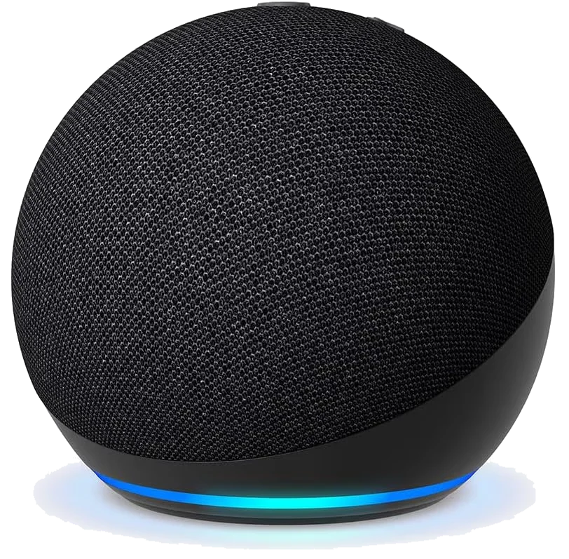
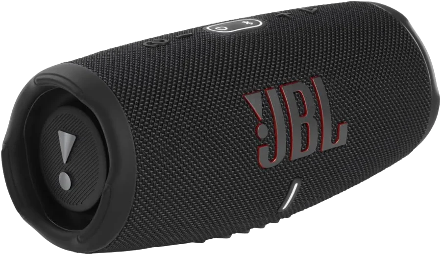
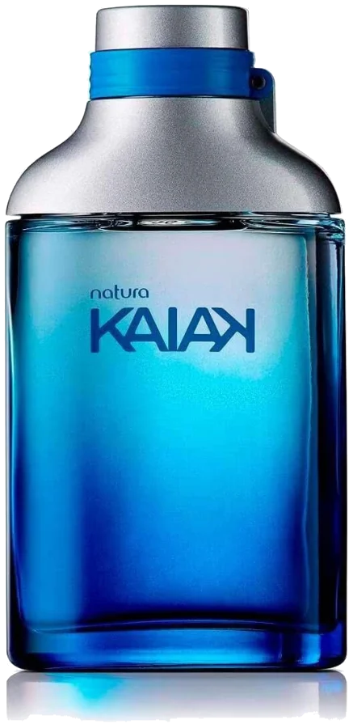
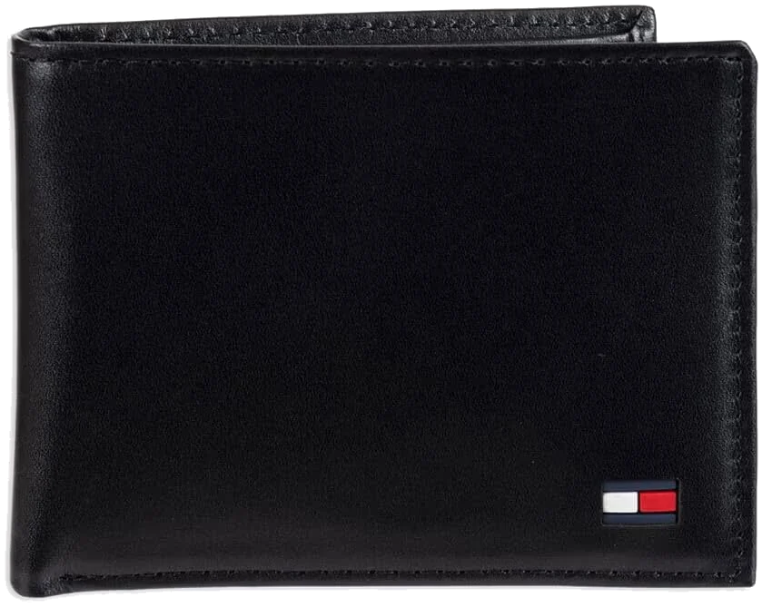
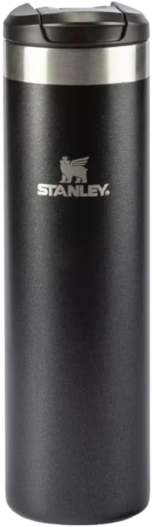

Categoria
Presentes por gênero.
Ideias para homens e mulheres, com sugestões que fogem do óbvio.
1 artigo15 ideias de presente
Artigos de presentes por gênero

Ainda não temos ideias aqui.
Presentes mais salvos.
Os achados desta categoria que mais gente guardou para depois.




